Thinking Fast And Slow shows you how two systems in your brain are constantly fighting over control of your behavior and actions, and teaches you the many ways in which this leads to errors in memory, judgment and decisions, and what you can do about it.
Favorite quote from the author:
Say what you will, they don’t hand out the Nobel prize for economics like it’s a slice of pizza. Ergo, when Daniel Kahneman does something, it’s worth paying attention to.
His 2011 book, Thinking Fast And Slow, deals with the two systems in our brain, whose fighting over who’s in charge makes us prone to errors and false decisions.
It shows you where you can and can’t trust your gut feeling and how to act more mindfully and make better decisions.
Here are 3 good lessons to know what’s going on up there:
1. Your behavior is determined by 2 systems in your mind – one conscious and the other automatic.
2. Your brain is lazy and thus keeps you from using the full power of your intelligence.
3. When you’re making decisions about money, leave your emotions at home.
Want to school your brain? Let’s take a field trip through the mind!
Lesson 1: Your behavior is determined by 2 systems in your mind – one conscious and the other automatic.
Kahneman labels the 2 systems in your mind as follows.
System 1 is automatic and impulsive.
It’s the system you use when someone sketchy enters the train and you instinctively turn towards the door and what makes you eat the entire bag of chips in front of the TV when you just wanted to have a small bowl.
System 1 is a remnant from our past, and it’s crucial to our survival. Not having to think before jumping away from a car when it honks at you is quite useful, don’t you think?
System 2 is very conscious, aware and considerate.
It helps you exert self-control and deliberately focus your attention. This system is at work when you’re meeting a friend and trying to spot them in a huge crowd of people, as it helps you recall how they look and filter out all these other people.
System 2 is one of the most ‘recent’ additions to our brain and only a few thousand years old. It’s what helps us succeed in today’s world, where our priorities have shifted from getting food and shelter to earning money, supporting a family and making many complex decisions.
However, these 2 systems don’t just perfectly alternate or work together. They often fight over who’s in charge and this conflict determines how you act and behave.
Lesson 2: Your brain is lazy and causes you to make intellectual errors.
Here’s an easy trick to show you how this conflict of 2 systems affects you, it’s called the bat and ball problem.
A baseball bat and a ball cost $1.10. The bat costs $1 more than the ball. How much does the ball cost?
I’ll give you a second.
…
Got it?
If your instant and initial answer is $0.10, I’m sorry to tell you that system 1 just tricked you.
Do the math again.
And?
Once you spent a minute or two actually thinking about it, you’ll see that the ball must cost $0.05. Then, if the bat costs $1 more, it comes out to $1.05, which, combined, gives you $1.10.
Fascinating, right? What happened here?
When system 1 faces a tough problem it can’t solve, it’ll call system 2 into action to work out the details.
But sometimes your brain perceives problems as simpler as they actually are. System 1 thinks it can handle it, even though it actually can’t, and you end up making a mistake.
So when it seems system 1 can handle things, it won’t activate system 2. In this case, though, it leads you to not use all of your IQ points, even though you’d actually need to, so our brain limits our intelligence by being lazy.
Lesson 3: When you’re making decisions about money, leave your emotions at home.
Even though Milton Friedman’s research about economics built the foundation of today’s work in the field, eventually we came to grips with the fact that the homo oeconomicus, the man (or woman) who only acts based on rational thinking, first introduced by John Stuart Mill, doesn’t quite resemble us.
Imagine these 2 scenarios:
You’re given $1,000. Then you have the choice between receiving another, fixed $500, or taking a 50% gamble to win another $1,000.
You’re given $2,000. Then you have the choice between losing $500, fixed, or taking a gamble with a 50% chance of losing another $1,000.
Which choice would you make for each one?
If you’re like most people, you would rather take the safe $500 in scenario 1, but the gamble in scenario 2. Yet the odds of ending up at $1,000, $1,500 or $2,000 are the exact same in both.
The reason has to do with loss aversion. We’re a lot more afraid to lose what we already have, as we are keen on getting more.
We also perceive value based on reference points.Starting at $2,000 makes you think you’re in a better starting position, which you want to protect.
Lastly, we get less sensitive about money (called diminishing sensitivity principle), the more we have. The loss of $500 when you have $2,000 seems smaller than the gain of $500 when you only have $1,000, so you’re more likely to take a chance.
Be aware of these things. Just knowing your emotions try to confuse you when it’s time to talk money will help you make better decisions. Try to consider statistics, probability and when the odds are in your favor, act accordingly.
Don’t let emotions get in the way where they have no business. After all, rule number 1 for any good poker player is “Leave your emotions at home.”
Introduction to Two Systems
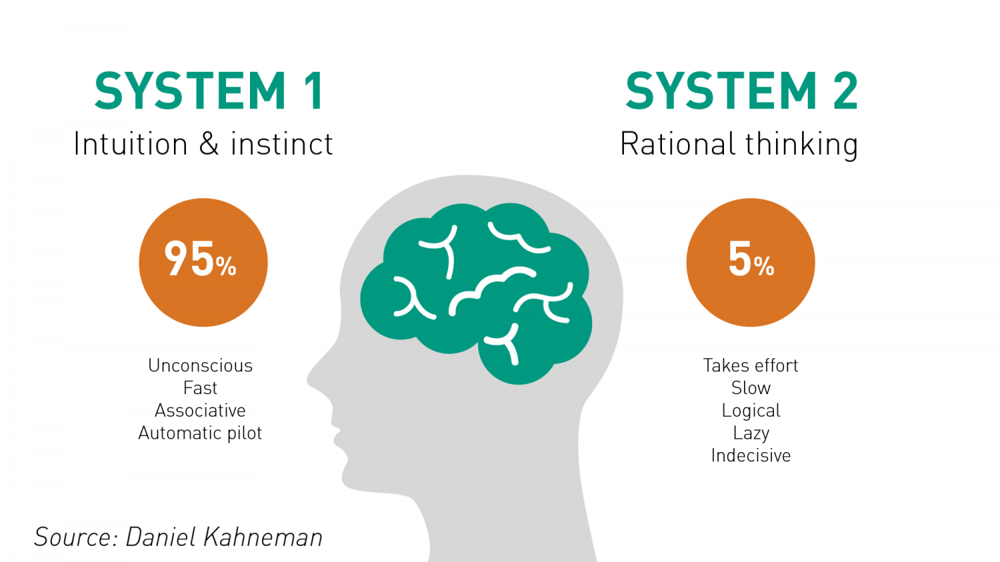
Quote
"He had an impression, but some of his impressions are illusions."
"This was a pure System 1 response. She reacted to the threat before she recognized it."
"This is your System 1 talking. Slow down and let your System 2 take control."
Psychologists have been intensely interested for several decades in the two modes of thinking evoked by the picture of the angry woman and by the multiplication problem, and have offered many labels for them. I adopt terms originally proposed by the psychologists Keith Stanovich and Richard West, and will refer to two systems in the mind, System 1 and System 2.
System 1 operates automatically and quickly, with little or no effort and no sense of voluntary control.
System 2 allocates attention to the effortful mental activities that demand it, including complex computations. The operations of System 2 are often associated with the subjective experience of agency, choice, and concentration.
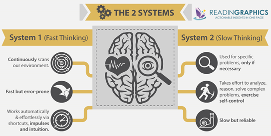
The labels of System 1 and System 2 are widely used in psychology, but I go further than most in this book, which you can read as a psychodrama with two characters.
When we think of ourselves, we identify with System 2, the conscious, reasoning self that has beliefs, makes choices, and decides what to think about and what to do. Although System 2 believes itself to be where the action is, the automatic System 1 is the hero of the book. I describe System 1 as effortlessly originating impressions and feelings that are the main sources of the explicit beliefs and deliberate choices of System 2. The automatic operations of System 1 generate surprisingly complex patterns of ideas, but only the slower System 2 can construct thoughts in an orderly series of steps. I also describe circumstances in which System 2 takes over, overruling the freewheeling impulses and associations of System 1. You will be invited to think of the two systems as agents with their individual abilities, limitations, and functions.
In rough order of complexity, here are some examples of the automatic activities that are attributed to System 1:
Detect that one object is more distant than another.
Orient to the source of a sudden sound.
Complete the phrase “bread and…”
Make a “disgust face” when shown a horrible picture.
Detect hostility in a voice.
Answer to 2 + 2 = ?
Read words on large billboards.
Drive a car on an empty road.
Find a strong move in chess (if you are a chess master).
Understand simple sentences.
Recognize that a “meek and tidy soul with a passion for detail” resembles an occupational stereotype.
All these mental events belong with the angry woman—they occur automatically and require little or no effort. The capabilities of System 1 include innate skills that we share with other animals. We are born prepared to perceive the world around us, recognize objects, orient attention, avoid losses, and fear spiders. Other mental activities become fast and automatic through prolonged practice. System 1 has learned associations between ideas (the capital of France?); it has also learned skills such as reading and understanding nuances of social situations. Some skills, such as finding strong chess moves, are acquired only by specialized experts. Others are widely shared. Detecting the similarity of a personality sketch to an occupational stereotype requires broad knowledge of the language and the culture, which most of us possess. The knowledge is stored in memory and accessed without intention and without effort.
Several of the mental actions in the list are completely involuntary. You cannot refrain from understanding simple sentences in your own language or from orienting to a loud unexpected sound, nor can you prevent yourself from knowing that 2 + 2 = 4 or from thinking of Paris when the capital of France is mentioned. Other activities, such as chewing, are susceptible to voluntary control but normally run on automatic pilot. The control of attention is shared by the two systems. Orienting to a loud sound is normally an involuntary operation of System 1, which immediately mobilizes the voluntary attention of System 2. You may be able to resist turning toward the source of a loud and offensive comment at a crowded party, but even if your head does not move, your attention is initially directed to it, at least for a while. However, attention can be moved away from an unwanted focus, primarily by focusing intently on another target.
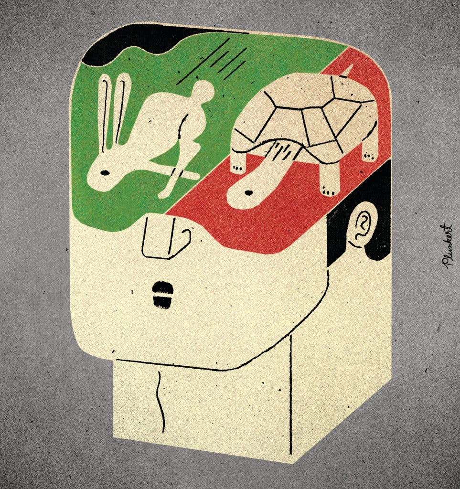
The highly diverse operations of System 2 have one feature in common: they require attention and are disrupted when attention is drawn away. Here are some examples:
Brace for the starter gun in a race.
Focus attention on the clowns in the circus.
Focus on the voice of a particular person in a crowded and noisy room.
Look for a woman with white hair.
Search memory to identify a surprising sound.
Maintain a faster walking speed than is natural for you.
Monitor the appropriateness of your behavior in a social situation.
Count the occurrences of the letter a in a page of text.
Tell someone your phone number.
Park in a narrow space (for most people except garage attendants).
Compare two washing machines for overall value.
Fill out a tax form.
Check the validity of a complex logical argument.
In all these situations you must pay attention, and you will perform less well, or not at all, if you are not ready or if your attention is directed inappropriately. System 2 has some ability to change the way System 1 works, by programming the normally automatic functions of attention and memory.
When waiting for a relative at a busy train station, for example, you can set yourself at will to look for a white-haired woman or a bearded man, and thereby increase the likelihood of detecting your relative from a distance. You can set your memory to search for capital cities that start with N or for French existentialist novels. And when you rent a car at London’s Heathrow Airport, the attendant will probably remind you that “we drive on the left side of the road over here.” In all these cases, you are asked to do something that does not come naturally, and you will find that the consistent maintenance of a set requires continuous exertion of at least some effort.
The often-used phrase “pay attention” is apt: you dispose of a limited budget of attention that you can allocate to activities, and if you try to go beyond your budget, you will fail. It is the mark of effortful activities that they interfere with each other, which is why it is difficult or impossible to conduct several at once. You could not compute the product of 17 × 24 while making a left turn into dense traffic, and you certainly should not try. You can do several things at once, but only if they are easy and undemanding. You are probably safe carrying on a conversation with a passenger while driving on an empty highway, and many parents have discovered, perhaps with some guilt, that they can read a story to a child while thinking of something else.
Everyone has some awareness of the limited capacity of attention, and our social behavior makes allowances for these limitations. When the driver of a car is overtaking a truck on a narrow road, for example, adult passengers quite sensibly stop talking. They know that distracting the driver is not a good idea, and they also suspect that he is temporarily deaf and will not hear what they say.
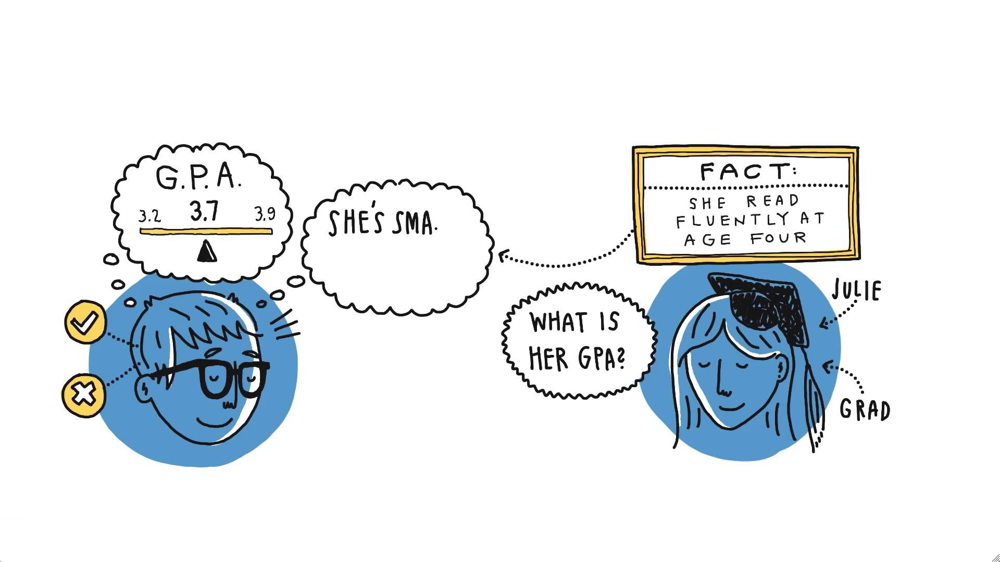
Intense focusing on a task can make people effectively blind, even to stimuli that normally attract attention. The most dramatic demonstration was offered by Christopher Chabris and Daniel Simons in their book The Invisible Gorilla. They constructed a short film of two teams passing basketballs, one team wearing white shirts, the other wearing black. The viewers of the film are instructed to count the number of passes made by the white team, ignoring the black players. This task is difficult and completely absorbing. Halfway through the video, a woman wearing a gorilla suit appears, crosses the court, thumps her chest, and moves on. The gorilla is in view for 9 seconds. Many thousands of people have seen the video, and about half of them do not notice anything unusual. It is the counting task—and especially the instruction to ignore one of the teams—that causes the blindness. No one who watches the video without that task would miss the gorilla. Seeing and orienting are automatic functions of System 1, but they depend on the allocation of some attention to the relevant stimulus. The authors note that the most remarkable observation of their study is that people find its results very surprising. Indeed, the viewers who fail to see the gorilla are initially sure that it was not there—they cannot imagine missing such a striking event. The gorilla study illustrates two important facts about our minds: we can be blind to the obvious, and we are also blind to our blindness.
Introduction to Heuristics and Biases
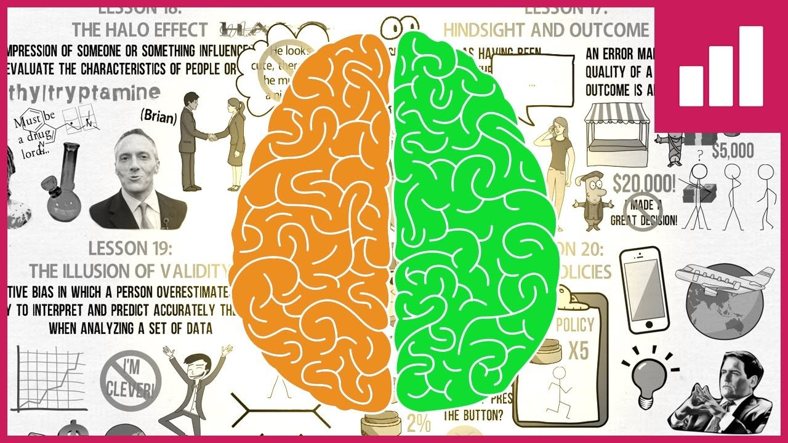
Quote
"That start-up achieved an outstanding proof of concept, but we shouldn’t expect them to do as well in the future. They are still a long way from the market and there is a lot of room for regression."
"Our intuitive prediction is very favorable, but it is probably too high. Let’s take into account the strength of our evidence and regress the prediction toward the mean."
"The investment may be a good idea, even if the best guess is that it will fail. Let's not say we really believe it is the next Google."
"I read one review of that brand and it was excellent. Still, that could have been a fluke. Let’s consider only the brands that have a large number of reviews and pick the one that looks best."
Life presents us with many occasions to forecast. Economists forecast inflation and unemployment, financial analysts forecast earnings, military experts predict casualties, venture capitalists assess profitability, publishers and producers predict audiences, contractors estimate the time required to complete projects, chefs anticipate the demand for the dishes on their menu, engineers estimate the amount of concrete needed for a building, fireground commanders assess the number of trucks that will be needed to put out a fire. In our private lives, we forecast our spouse’s reaction to a proposed move or our own future adjustment to a new job.
Some predictive judgments, such as those made by engineers, rely largely on look-up tables, precise calculations, and explicit analyses of outcomes observed on similar occasions. Others involve intuition and System 1, in two main varieties. Some intuitions draw primarily on skill and expertise acquired by repeated experience. The rapid and automatic judgments and choices of chess masters, fire ground commanders, and physicians that Gary Klein has described in Sources of Power and elsewhere illustrate these skilled intuitions, in which a solution to the current problem comes to mind quickly because familiar cues are recognized.
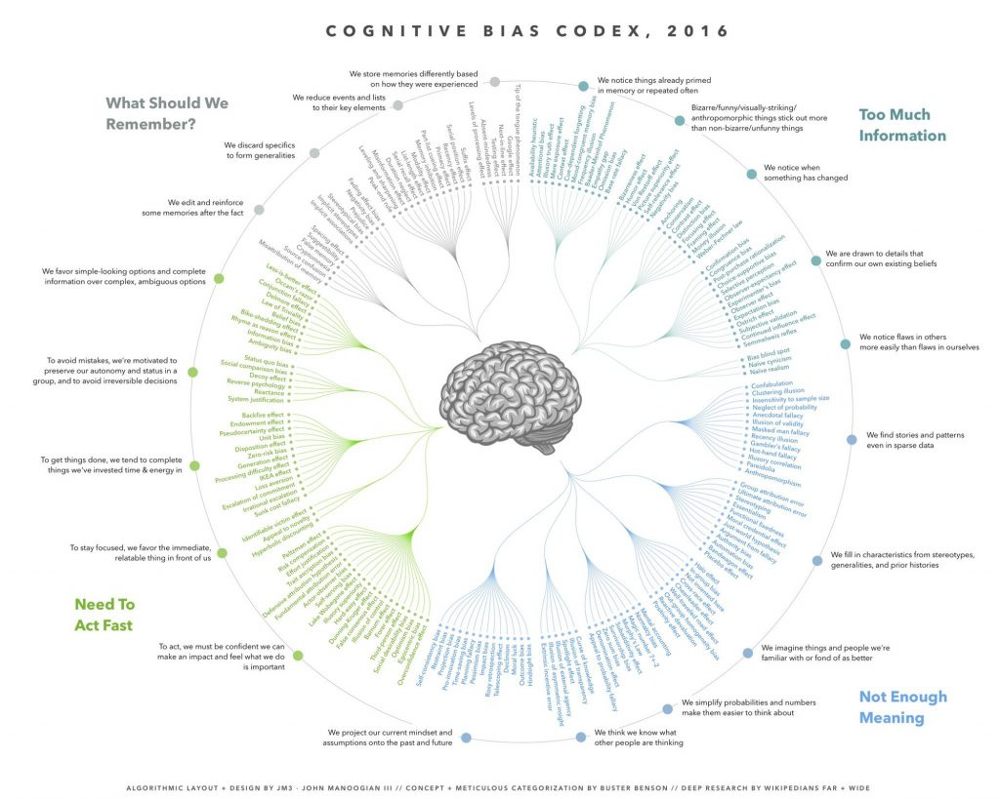
Other intuitions, which are sometimes subjectively indistinguishable from the first, arise from the operation of heuristics that often substitute an easy question for the harder one that was asked. Intuitive judgments can be made with high confidence even when they are based on non-regressive assessments of weak evidence. Of course, many judgments, especially in the professional domain, are influenced by a combination of analysis and intuition.
Let us return to a person we have already met:
Julie is currently a senior in a state university. She read fluently when she was four years old. What is her grade point average (GPA)?
People who are familiar with the American educational scene quickly come up with a number, which is often in the vicinity of 3.7 or 3.8. How does this occur? Several operations of System 1 are involved.
A causal link between the evidence (Julie’s reading) and the target of the prediction (her GPA) is sought. The link can be indirect. In this instance, early reading and a high GDP are both indications of academic talent. Some connection is necessary. You (your System 2) would probably reject as irrelevant a report of Julie winning a fly fishing competition or excelling at weight lifting in high school. The process is effectively dichotomous. We are capable of rejecting information as irrelevant or false, but adjusting for smaller weaknesses in the evidence is not something that System 1 can do. As a result, intuitive predictions are almost completely insensitive to the actual predictive quality of the evidence. When a link is found, as in the case of Julie’s early reading, WYSIATI applies: your associative memory quickly and automatically constructs the best possible story from the information available.
Next, the evidence is evaluated in relation to a relevant norm. How precocious is a child who reads fluently at age four? What relative rank or percentile score corresponds to this achievement? The group to which the child is compared (we call it a reference group) is not fully specified, but this is also the rule in normal speech: if someone graduating from college is described as “quite clever” you rarely need to ask "When you say ‘quite clever,’ which reference group do you have in mind?"
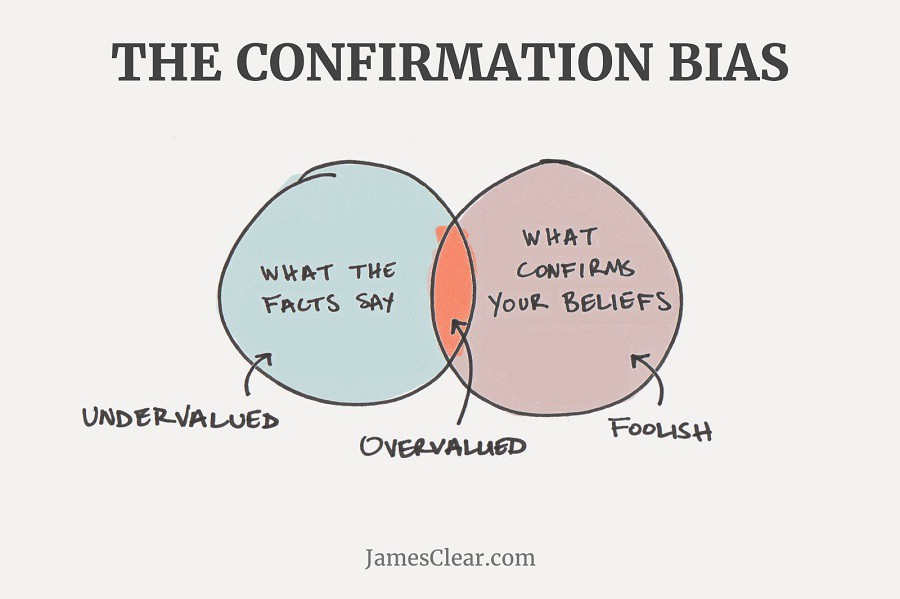
The next step involves substitution and intensity matching. The evaluation of the flimsy evidence of cognitive ability in childhood is substituted as an answer to the question about her college GPA. Julie will be assigned the same percentile score for her GPA and for her achievements as an early reader.
The question specified that the answer must be on the GPA scale, which requires another intensity-matching operation, from a general impression of Julie’s academic achievements to the GPA that matches the evidence for her talent. The final step is a translation, from an impression of Julie’s relative academic standing to the GPA that corresponds to it.
Intensity matching yields predictions that are as extreme as the evidence on which they are based, leading people to give the same answer to two quite different questions:
What is Julie’s percentile score on reading precocity?
What is Julie’s percentile score on GPA?
By now you should easily recognize that all these operations are features of System 1. I listed them here as an orderly sequence of steps, but of course the spread of activation in associative memory does not work this way. You should imagine a process of spreading activation that is initially prompted by the evidence and the question, feeds back upon itself, and eventually settles on the most coherent solution possible.
Amos and I once asked participants in an experiment to judge descriptions of eight college freshmen, allegedly written by a counselor on the basis of interviews of the entering class. Each description consisted of five adjectives, as in the following example:
intelligent, self-confident, well-read, hardworking, inquisitive
We asked some participants to answer two questions:
How much does this description impress you with respect to academic ability?
What percentage of descriptions of freshmen do you believe would impress you more?
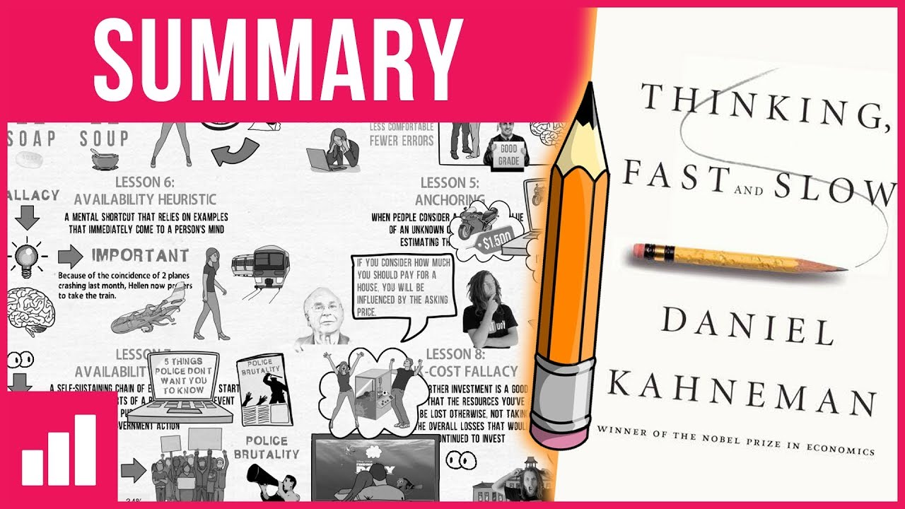
The questions require you to evaluate the evidence by comparing the description to your norm for descriptions of students by counselors. The very existence of such a norm is remarkable. Although you surely do not know how you acquired it, you have a fairly clear sense of how much enthusiasm the description conveys: the counselor believes that this student is good, but not spectacularly good. There is room for stronger adjectives than intelligent (brilliant, creative), well-read (scholarly, erudite, impressively knowledgeable), and hardworking (passionate, perfectionist). The verdict: very likely to be in the top 15% but unlikely to be in the top 3%. There is impressive consensus in such judgments, at least within a culture.
The other participants in our experiment were asked different questions:
What is your estimate of the grade point average that the student will obtain?
What is the percentage of freshmen who obtain a higher GPA?
You need another look to detect the subtle difference between the two sets of questions. The difference should be obvious, but it is not. Unlike the first questions, which required you only to evaluate the evidence, the second set involves a great deal of uncertainty. The question refers to actual performance at the end of the freshman year. What happened during the year since the interview was performed? How accurately can you predict the student’s actual achievements in the first year at college from five adjectives? Would the counselor herself be perfectly accurate if she predicted GPA from an interview?
The objective of this study was to compare the percentile judgments that the participants made when evaluating the evidence in one case, and when predicting the ultimate outcome in another. The results are easy to summarize: the judgments were identical. Although the two sets of questions differ (one is about the description, the other about the student’s future academic performance), the participants treated them as if they were the same. As was the case with Julie, the prediction of the future is not distinguished from an evaluation of current evidence—prediction matches evaluation. This is perhaps the best evidence we have for the role of substitution. People are asked for a prediction but they substitute an evaluation of the evidence, without noticing that the question they answer is not the one they were asked. This process is guaranteed to generate predictions that are systematically biased; they completely ignore regression to the mean.
During my military service in the Israeli Defense Forces, I spent some time attached to a unit that selected candidates for officer training on the basis of a series of interviews and field tests. The designated criterion for successful prediction was a cadet’s final grade in officer school. The validity of the ratings was known to be rather poor (I will tell more about it in a later chapter). The unit still existed years later, when I was a professor and collaborating with Amos in the study of intuitive judgment. I had good contacts with the people at the unit and asked them for a favor. In addition to the usual grading system they used to evaluate the candidates, I asked for their best guess of the grade that each of the future cadets would obtain in officer school. They collected a few hundred such forecasts. The officers who had produced the predictions were all familiar with the letter grading system that the school applied to its cadets and the approximate proportions of A’s, B’s, etc., among them. The results were striking: the relative frequency of A’s and B’s in the predictions was almost identical to the frequencies in the final grades of the school.
Introduction to Overconfidence
Quote
"They have an illusion of control. They seriously underestimate the obstacles."
"They seem to suffer from an acute case of competitor neglect."
"This is a case of overconfidence. They seem to believe they know more than they actually do know."
"We should conduct a premortem session. Someone may come up with a threat we have neglected."
The trader-philosopher-statistician Nassim Taleb could also be considered a psychologist. In The Black Swan, Taleb introduced the notion of a narrative fallacy to describe how flawed stories of the past shape our views of the world and our expectations for the future. Narrative fallacies arise inevitably from our continuous attempt to make sense of the world. The explanatory stories that people find compelling are simple; are concrete rather than abstract; assign a larger role to talent, stupidity, and intentions than to luck; and focus on a few striking events that happened rather than on the countless events that failed to happen. Any recent salient event is a candidate to become the kernel of a causal narrative. Taleb suggests that we humans constantly fool ourselves by constructing flimsy accounts of the past and believing they are true.
Good stories provide a simple and coherent account of people’s actions and intentions. You are always ready to interpret behavior as a manifestation of general propensities and personality traits—causes that you can readily match to“effects. The halo effect discussed earlier contributes to coherence, because it inclines us to match our view of all the qualities of a person to our judgment of one attribute that is particularly significant. If we think a baseball pitcher is handsome and athletic, for example, we are likely to rate him better at throwing the ball, too. Halos can also be negative: if we think a player is ugly, we will probably underrate his athletic ability. The halo effect helps keep explanatory narratives simple and coherent by exaggerating the consistency of evaluations: good people do only good things and bad people are all bad. The statement "Hitler loved dogs and little children" is shocking no matter how many times you hear it, because any trace of kindness in someone so evil violates the expectations set up by the halo effect. Inconsistencies reduce the ease of our thoughts and the clarity of our feelings.
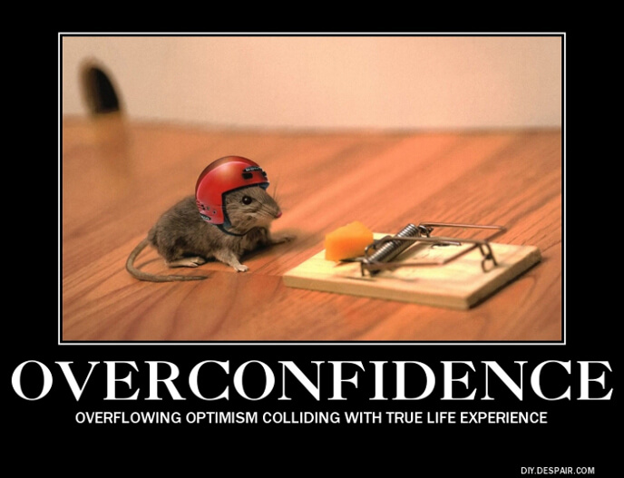
A compelling narrative fosters an illusion of inevitability. Consider the story of how Google turned into a giant of the technology industry. Two creative graduate students in the computer science department at Stanford University come up with a superior way of searching information on the Internet. They seek and obtain funding to start a company and make a series of decisions that work out well. Within a few years, the company they started is one of the most valuable stocks in America, and the two former graduate students are among the richest people on the planet. On one memorable occasion, they were lucky, which makes the story even more compelling: a year after founding Google, they were willing to sell their company for less than $1 million, but the buyer said the price was too high. Mentioning the single lucky incident actually makes it easier to underestimate the multitude of ways in which luck affected the outcome.
A detailed history would specify the decisions of Google’s founders, but for our purposes it suffices to say that almost every choice they made had a good outcome. A more complete narrative would describe the actions of the firms that Google defeated. The hapless competitors would appear to be blind, slow, and altogether inadequate in dealing with the threat that eventually overwhelmed them.
I intentionally told this tale blandly, but you get the idea: there is a very good story here. Fleshed out in more detail, the story could give you the sense that you understand what made Google succeed; it would also make you feel that you have learned a valuable general lesson about what makes businesses succeed. Unfortunately, there is good reason to believe that your sense of understanding and learning from the Google story is largely illusory. The ultimate test of an explanation is whether it would have made the event predictable in advance. No story of Google’s unlikely success will meet that test, because no story can include the myriad of events that would have caused a different outcome. The human mind does not deal well with nonevents. The fact that many of the important events that did occur involve choices further tempts you to exaggerate the role of skill and underestimate the part that luck played in the outcome. Because every critical decision turned out well, the record suggests almost flawless prescience—but bad luck could have disrupted any one of the successful steps. The halo effect adds the final touches, lending an aura of invincibility to exaggerate the role of skill and underestimate the part that luck played in the outcome. Because every critical decision turned out well, the record suggests almost flawless prescience—but bad luck could have disrupted any one of the successful steps. The halo effect adds the final touches, lending an aura of invincibility to the heroes of the story.
Like watching a skilled rafter avoiding one potential calamity after another as he goes down the rapids, the unfolding of the Google story is thrilling because of the constant risk of disaster. However, there is an instructive difference between the two cases. The skilled rafter has gone down rapids hundreds of times. He has learned to read the roiling water in front of him and to anticipate obstacles. He has learned to make the tiny adjustments of posture that keep him upright. There are fewer opportunities for young men to learn how to create a giant company, and fewer chances to avoid hidden rocks—such as a brilliant innovation by a competing firm. Of course there was a great deal of skill in the Google story, but luck played a more important role in the actual event than it does in the telling of it. And the more luck was involved, the less there is to be learned.
At work here is that powerful WYSIATI rule. You cannot help dealing with the limited information you have as if it were all there is to know. You build the best possible story from the information available to you, and if it is a good story, you believe it. Paradoxically, it is easier to construct a coherent story when you know little, when there are fewer pieces to fit into the puzzle. Our comforting conviction that the world makes sense rests on a secure foundation: our almost unlimited ability to ignore our ignorance.
I have heard of too many people who “knew well before it happened that the 2008 financial crisis was inevitable.” This sentence contains a highly objectionable word, which should be removed from our vocabulary in discussions of major events. The word is, of course, knew. Some people thought well in advance that there would be a crisis, but they did not know it. They now say they knew it because the crisis did in fact happen. This is a misuse of an important concept. In everyday language, we apply the word know only when what was known is true and can be shown to be true. We can know something only if it is both true and knowable. But the people who thought there would be a crisis (and there are fewer of them than now remember thinking it could not conclusively show it at the time. Many intelligent and well-informed people were keenly interested in the future of the economy and did not believe a catastrophe was imminent; I infer from this fact that the crisis was not knowable. What is perverse about the use of know in this context is not that some individuals get credit for prescience that they do not deserve. It is that the language implies that the world is more knowable than it is. It helps perpetuate a pernicious illusion.
The core of the illusion is that we believe we understand the past, which implies that the future also should be knowable, but in fact we understand the past less than we believe we do. Know is not the only word that fosters this illusion. In common usage, the words intuition and premonition also are reserved for past thoughts that turned out to be true. The statement "I had a premonition that the marriage would not last, but I was wrong" sounds odd, as does any sentence about an intuition that turned out to be false. To think clearly about the future, we need to clean up the language that we use in labeling the beliefs we had in the past.
Introduction to Choices
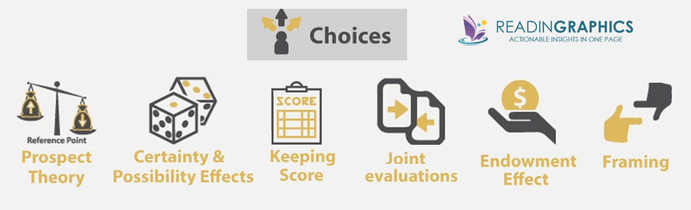
Quote
"They will feel better about what happened if they manage to frame the outcome in terms of how much money they kept rather than how much they lost."
"Let’s reframe the problem by changing the reference point. Imagine we did not own it; how much would we think it is worth?"
"Charge the loss to your mental account of ‘general revenue’—you will feel better!"
"They ask you to check the box to opt out of their mailing list. Their list would shrink if they asked you to check a box to opt in!"
Imagine that you face the following pair of concurrent decisions. First examine both decisions, then make your choices.
Decision (i): Choose between
A. sure gain of $240
B. 25% chance to gain $1,000 and 75% chance to gain nothing
Decision (ii): Choose between
C. sure loss of $750
D. 75% chance to lose $1,000 and 25% chance to lose nothing
This pair of choice problems has an important place in the history of prospect theory, and it has new things to tell us about rationality. As you skimmed the two problems, your initial reaction to the sure things (A and C) was attraction to the first and aversion to the second. The emotional evaluation of “sure gain” and “sure loss” is an automatic reaction of System 1, which certainly occurs before the more effortful (and optional) computation of the expected values of the two gambles (respectively, a gain of $250 and a loss of $750). Most people’s choices correspond to the predilections of System 1, and large majorities prefer A to B and D to C. As in many other choices that involve moderate or high probabilities, people tend to be risk averse in the domain of gains and risk seeking in the domain of losses. In the original experiment that Amos and I carried out, 73% of respondents chose A in decision i and D in decision ii and only 3% favored the combination of B and C.
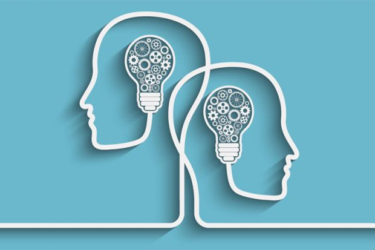
You were asked to examine both options before making your first choice, and you probably did so. But one thing you surely did not do: you did not compute the possible results of the four combinations of choices (A and C, A and D, B and C, B and D) to determine which combination you like best. Your separate preferences for the two problems were intuitively compelling and there was no reason to expect that they could lead to trouble. Furthermore, combining the two decision problems is a laborious exercise that you would need paper and pencil to complete. You did not do it. Now consider the following choice problem:
AD. 25% chance to win $240 and 75% chance to lose $760
BC. 25% chance to win $250 and 75% chance to lose $750
This choice is easy! Option BC actually dominates option AD (the technical term for one option being unequivocally better than another). You already know what comes next. The dominant option in BC is the combination of the two rejected options in the first pair of decision problems, the one that only 3% of respondents favored in our original study. The inferior option AD was preferred by 73% of respondents.
Broad or Narrow?
This set of choices has a lot to tell us about the limits of human rationality. For one thing, it helps us see the logical consistency of Human preferences for what it is—a hopeless mirage. Have another look at the last problem, the easy one. Would you have imagined the possibility of decomposing this obvious choice problem into a pair of problems that would lead a large majority of people to choose an inferior option? This is generally true: every simple choice formulated in terms of gains and losses can be deconstructed in innumerable ways into a combination of choices, yielding preferences that are likely to be inconsistent.
The example also shows that it is costly to be risk averse for gains and risk seeking for losses. These attitudes make you willing to pay a premium to obtain a sure gain rather than face a gamble, and also willing to pay a premium (in expected value) to avoid a sure loss. Both payments come out of the same pocket, and when you face both kinds of problems at once, the discrepant attitudes are unlikely to be optimal.
There were two ways of construing decisions i and ii:
narrow framing: a sequence of two simple decisions, considered separately
broad framing: a single comprehensive decision, with four options
Broad framing was obviously superior in this case. Indeed, it will be superior (or at least not inferior) in every case in which several decisions are to be contemplated together. Imagine a longer list of 5 simple (binary) decisions to be considered simultaneously. The broad (comprehensive) frame consists of a single choice with 32 options. Narrow framing will yield a sequence of 5 simple choices. The sequence of 5 choices will be one of the 32 options of the broad frame. Will it be the best? Perhaps, but not very likely. A rational agent will of course engage in broad framing, but Humans are by nature narrow framers.
The ideal of logical consistency, as this example shows, is not achievable by our limited mind. Because we are susceptible to WYSIATI and averse to mental effort, we tend to make decisions as problems arise, even when we are specifically instructed to consider them jointly. We have neither the inclination nor the mental resources to enforce consistency on our preferences, and our preferences are not magically set to be coherent, as they are in the rational-agent model.
Samuelson’s Problem
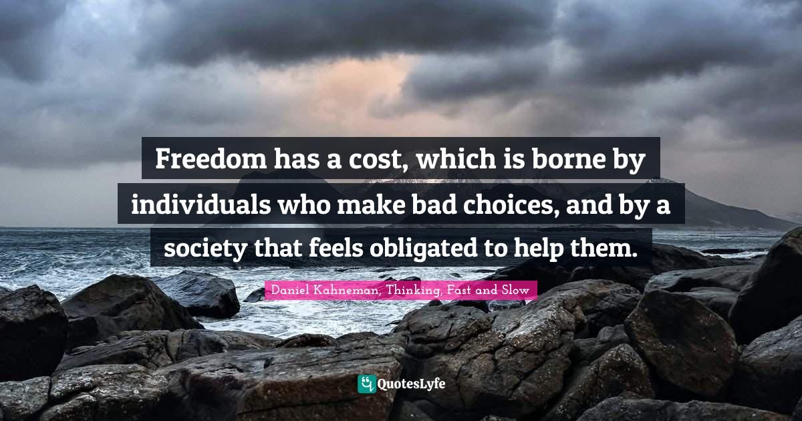
The great Paul Samuelson—a giant among the economists of the twentieth century—famously asked a friend whether he would accept a gamble on the toss of a coin in which he could lose $100 or win $200. His friend responded, “I won’t bet because I would feel the $100 loss more than the $200 gain. But I’ll take you on if you promise to let me make 100 such bets.” Unless you are a decision theorist, you probably share the intuition of Samuelson’s friend, that playing a very favorable but risky gamble multiple times reduces the subjective risk. Samuelson found his friend’s answer interesting and went on to analyze it. He proved that under some very specific conditions, a utility maximizer who rejects a single gamble should also reject the offer of many.
Remarkably, Samuelson did not seem to mind the fact that his proof, which is of course valid, led to a conclusion that violates common sense, if not rationality: the offer of a hundred gambles is so attractive that no sane person would reject it. Matthew Rabin and Richard Thaler pointed out that “the aggregated gamble of one hundred 50–50 lose $100/gain $200 bets has an expected return of $5,000, with only a 1/2,300 chance of losing any money and merely a 1/62,000 chance of losing more than $1,000.” Their point, of course, is that if utility theory can be consistent with such a foolish preference under any circumstances, then something must be wrong with it as a model of rational choice. Samuelson had not seen Rabin’s proof of the absurd consequences of severe loss aversion for small bets, but he would surely not have been surprised by it. His willingness even to consider the possibility that it could be rational to reject the package testifies to the powerful hold of the rational model.
Let us assume that a very simple value function describes the preferences of Samuelson’s friend (call him Sam). To express his aversion to losses Sam first rewrites the bet, after multiplying each loss by a factor of 2. He then computes the expected value of the rewritten bet. Here are the results, for one, two, or three tosses. They are sufficiently instructive to deserve some pupil-dilating effort.
Introduction to Two Selves
Quote
"The objective of policy should be to reduce human suffering. We aim for a lower U-index in society. Dealing with depression and extreme poverty should be a priority."
"The easiest way to increase happiness is to control your use of time. Can you find more time to do the things you enjoy doing?"
"Beyond the satiation level of income, you can buy more pleasurable experiences, but you will lose some of your ability to enjoy the less expensive ones."
The term utility has had two distinct meanings in its long history. Jeremy Bentham opened hisIntroduction to the Principles of Morals and Legislation with the famous sentence “Nature has placed mankind under the governance of two sovereign masters, pain and pleasure. It is for them alone to point out what we ought to do, as well as to determine what we shall do.” In an awkward footnote, Bentham apologized for applying the word utility to these experiences, saying that he had been unable to find a better word. To distinguish Bentham’s interpretation of the term, I will call it experienced utility.
For the last 100 years, economists have used the same word to mean something else. As economists and decision theorists apply the term, it means “wantability”—and I have called it decision utility. Expected utility theory, for example, is entirely about the rules of rationality that should govern decision utilities; it has nothing at all to say about hedonic experiences. Of course, the two concepts of utility will coincide if people want what they will enjoy, and enjoy what they chose for themselves—and this assumption of coincidence is implicit in the general idea that economic agents are rational. Rational agents are expected to know their tastes, both present and future, and they are supposed to make good decisions that will maximize these interests.
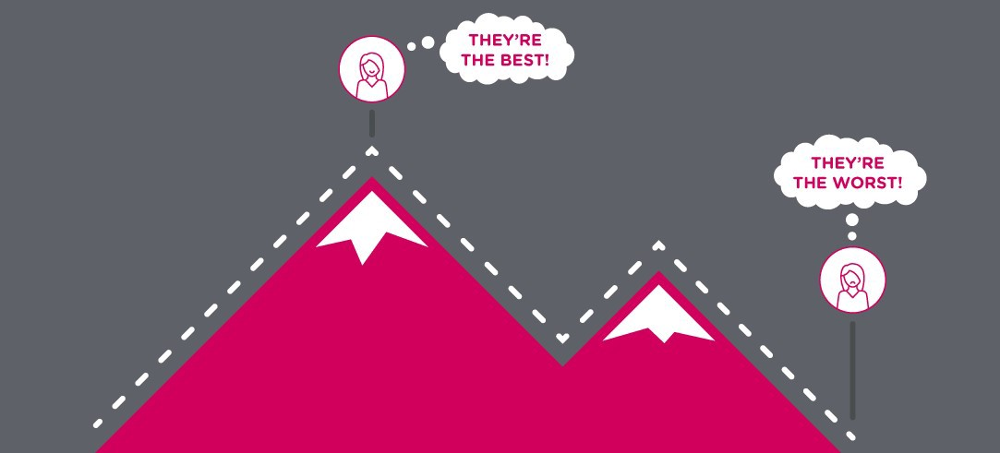
Experienced Utility
My fascination with the possible discrepancies between experienced utility and decision utility goes back a long way. While Amos and I were still working on prospect theory, I formulated a puzzle, which went like this: imagine an individual who receives one painful injection every day. There is no adaptation; the pain is the same day to day. Will people attach the same value to reducing the number of planned injections from 20 to 18 as from 6 to 4? Is there any justification for a distinction?
I did not collect data, because the outcome was evident. You can verify for yourself that you would pay more to reduce the number of injections by a third (from 6 to 4) than by one tenth (from 20 to 18). The decision utility of avoiding two injections is higher in the first case than in the second, and everyone will pay more for the first reduction than for the second. But this difference is absurd. If the pain does not change from day to day, what could justify assigning different utilities to a reduction of the total amount of pain by two injections, depending on the number of previous injections? In the terms we would use today, the puzzle introduced the idea that The term utility has had two distinct meanings in its long history. Jeremy Bentham opened hisIntroduction to the Principles of Morals and Legislation with the famous sentence “Nature has placed mankind under the governance of two sovereign masters, pain and pleasure. It is for them alone to point out what we ought to do, as well as to determine what we shall do.” In an awkward footnote, Bentham apologized for applying the word utility to these experiences, saying that he had been unable to find a better word. To distinguish Bentham’s interpretation of the term, I will call it experienced utility.
For the last 100 years, economists have used the same word to mean something else. As economists and decision theorists apply the term, it means “wantability”—and I have called it decision utility. Expected utility theory, for example, is entirely about the rules of rationality that should govern decision utilities; it has nothing at all to say about hedonic experiences. Of course, the two concepts of utility will coincide if people want what they will enjoy, and enjoy what they chose for themselves—and this assumption of coincidence is implicit in the general idea that economic agents are rational. Rational agents are expected to know their tastes, both present and future, and they are supposed to make good decisions that will maximize these interests.
Experienced Utility
My fascination with the possible discrepancies between experienced utility and decision utility goes back a long way. While Amos and I were still working on prospect theory, I formulated a puzzle, which went like this: imagine an individual who receives one painful injection every day. There is no adaptation; the pain is the same day to day. Will people attach the same value to reducing the number of planned injections from 20 to 18 as from 6 to 4? Is there any justification for a distinction?
I did not collect data, because the outcome was evident. You can verify for yourself that you would pay more to reduce the number of injections by a third (from 6 to 4) than by one tenth (from 20 to 18). The decision utility of avoiding two injections is higher in the first case than in the second, and everyone will pay more for the first reduction than for the second. But this difference is absurd. If the pain does not change from day to day, what could justify assigning different utilities to a reduction of the total amount of pain by two injections, depending on the number of previous injections? In the terms we would use today, the puzzle introduced the idea that procedure). A total of 154 patients participated in the experiment; the shortest procedure lasted 4 minutes, the longest 69 minutes.
Next, consider an easy question: Assuming that the two patients used the scale of pain similarly, which patient suffered more? No contest. There is general agreement that patient B had the worse time. Patient B spent at least as much time as patient A at any level of pain, and the “area under the curve” is clearly larger for B than for A. The key factor, of course, is that B’s procedure lasted much longer. I will call the measures based on reports of momentary pain hedonimeter totals.
When the procedure was over, all participants were asked to rate “the total amount of pain” they had experienced during the procedure. The wording was intended to encourage them to think of the integral of the pain they had reported, reproducing the hedonimeter totals. Surprisingly, the patients did nothing of the kind. The statistical analysis revealed two findings, which illustrate a pattern we have observed in other experiments:
Peak-end rule: The global retrospective rating was well predicted by the average of the level of pain reported at the worst moment of the experience and at its end.
Duration neglect: The duration of the procedure had no effect whatsoever on the ratings of total pain.
You can now apply these rules to the profiles of patients A and B. The worst rati Jon er soever on ng (8 on the 10-point scale) was the same for both patients, but the last rating before the end of the procedure was 7 for patient A and only 1 for patient B. The peak-end average was therefore 7.5 for patient A and only 4.5 for patient B. As expected, patient A retained a much worse memory of the episode than patient B. It was the bad luck of patient A that the procedure ended at a bad moment, leaving him with an unpleasant memory.
We now have an embarrassment of riches: two measures of experienced utility—the hedonimeter total and the retrospective assessment—that are systematically different. The hedonimeter totals are computed by an observer from an individual’s report of the experience of moments. We call these judgments duration-weighted, because the computation of the “area under the curve” assigns equal weights to all moments: two minutes of pain at level 9 is twice as bad as one minute at the same level of pain. However, the findings of this experiment and others show that the retrospective assessments are insensitive to duration and weight two singular moments, the peak and the end, much more than others. So which should matter? What should the physician do? The choice has implications for medical practice. We noted that:
If the objective is to reduce patients’ memory of pain, lowering the peak intensity of pain could be more important than minimizing the duration of the procedure. By the same reasoning, gradual relief may be preferable to abrupt relief if patients retain a better memory when the pain at the end of the procedure is relatively mild.
If the objective is to reduce the amount of pain actually experienced, conducting the procedure swiftly may be appropriate even if doing so increases the peak pain intensity and leaves patients with an awful memory.
Which of the two objectives did you find most compelling? I have not conducted a proper survey, but my impression is that a strong majority will come down in favor of reducing the memory of pain. I find it helpful to think of this dilemma as a conflict of interests between two selves (which do not correspond to the two familiar systems). The experiencing self is the one that answers the question: “Does it hurt now?” The remembering self is the one that answers the question: “How was it, on the whole?” Memories are all we get to keep from our experience of living, and the only perspective that we can adopt as we think about our lives is therefore that of the remembering self.
The Path to the Dark Side is Covered in PB&J
Sarah’s eight-year-old son is freaking out. His one perfect origami Yoda is missing. Dozens of them scattered everywhere after weeks of social distancing, hours of folding instead of schooling. She wishes she kept her cool when her “dieting” husband ate a year’s supply of peanut butter in seven weeks. Wishes she hadn’t rage-cleaned.
“I’ll try my best,” she says.
“There is no try!” her son wails.
She gloves up and digs in, pulling out half-eaten peanut butter sandwiches, unopened packets of artificial sweetener, rancid red onions, and so many wasted paper towels. At the bottom, no Yoda. Only more rage.
Photo Story: Wait
Wait your turn, signs proclaim. Wait for Chinese food. Wait to pick up cocktails from the bar, your only Friday night friends now. Wait your turn to see your older sister, Nancy. Nancy with dark jokes about suicides, who tells you she loves you by calling you Mister Adorkable through Zoom-filled screens. Nancy, who knows every line of the Big Lebowski and fights life with grace. They don’t teach you logic. Why draw the line here and not there? Why not cross? You hesitate. Imagine Nancy contaminated. Imagine her gasping, energy drained. What are the odds, frankly? What if? Wait.
Lipstick
We learned to paint our mouths kissable, but were taught not to. By the parish priest, by our mothers, by Seventeen magazine. Never on the first date, never more than one boy at a time, never below the neck. We practiced on the mirror and at slumber parties. When boys scratched on the window, we giggled and shivered. Only Lana slipped out, came back smeared and tight-lipped, full up with stories she wouldn’t tell us. At school on Monday, we lipsticked the mirror in the third-floor girl’s room: LANA SUCKS. Later we all learned. Later we all did it.
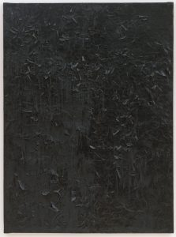
Photo Story: Breaths Caught on His Echoes
When he burned, she watched from the window as the casket shifted toward the chamber, as the cardboard lid vibrated, shuddered apart at the seam to reveal his hands, a moment before they would blossom in the fire that reflected in the metal frame of the door—the bloom that would arc in delicate peels, gray crepe flakes folding back like flower bulb sheaths, collapsing in stirs of ashes.
At night, when she needed, when her breaths caught on his echoes, blue note flecks from his voice, he palmed from the bottoms, from the swallows, to lull her stranded heart.
Lost Boys
Years later, we would have mortgages, car payments, and life insurance, but no recollection of when we all dropped acid together in the high desert after graduation. How when the sun started to come up, the clouds looked like crusader kings lined up against a limoncello sky, lances shooting past the horizon. How someone snapped a polaroid directly into the light to capture us saying we were gonna remember this forever. This is it, we all agreed, our pupils swallowing what remained of our iris meat, the polaroid turning pitch black. This is the moment right before it all happens.
Domestic
Luke started to howl as Mum click-clicked the washing machine. “He’ll be all nice and fresh!” she cried in her bright and ruthless voice. Like when she’d kidnapped my cloth rabbit stuffed with her old stockings. Churned in boiling water and spun around, rabbit was so terrified he wet himself. Things went into her laundry basket as themselves and came out flattened.
Pushing aside the baby bouncer, I shouted, “You’re cruel and nasty. And a bad mother.”
My head was about to fly off and land on a shelf, still shouting bad mother, when she let go of my shoulders.
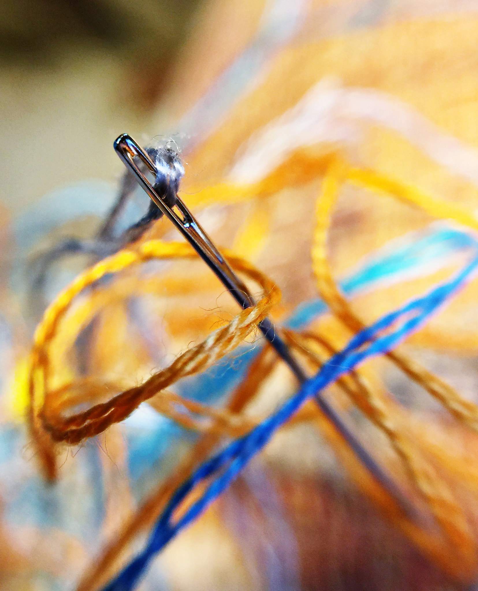
Embroidery
Because I couldn’t find you, I embroidered little houses and visited each one. Some houses floated, tugging on their threads. Others were sewn to their foundations. I opened woven doors, tred on woven floors, until I found you in our old house, playing the piano. We played a duet and made love in the woven bedroom. Each skein was an adventure. Threads the color of flowers. But when we remembered tearing each other’s coats in a city park, we ripped up the house. Thread still clings to my breasts and arms. I play both parts of the duet at once.
Photo Story: The Spoon
The fork snored lightly, sound asleep and unaware of what tomorrow would bring. He lay beside her, on his back, wide awake. Moonlight spilled across the room. In the quiet, he could hear everything. The neighbor’s cat and a faint melody that might have been a violin. A dog’s chortle. A cow’s moo. The clock’s tick. It was almost time to go. He was too tense to relax; too excited to sleep. One more hour. Then he would slip out of bed, grab his duffel, and go pick up Dixie.
He smiled, “What a dish!”
Tonight they were running away.
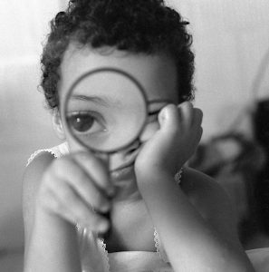
Shrinking
Nia didn’t mind at first. Being at her kids’ eye-level made life easier. Their odd stories and complaints became miraculously comprehensible. Playing dress-up with them was more fun too. She liked staggering around in her too-big red pumps and Issey Miyake suits, flapping the jacket’s long, empty arms until they fizzed with laughter. But shrinking became less amusing as the kids grew bigger, and she smaller. Some days, she had to stamp her tiny feet on their dinner plates to get noticed. Some days, she had to check her reflection in a teaspoon to make sure she was still there.
Uncle John Isn’t Really My Uncle
He’s just a man who works at the candy company. When he visits, he brings me and Mom bags of malformed candies, the ones that weren’t good enough to package. Chocolates with chunks missing. Gummy bears sliced in half. Every night he calls his wife and daughter. “Shhh,” he says to us. “I love you, goodnight,” he whispers into the phone. After dinner, Mom and Uncle John dance in the backyard. I watch from my window. Mom puts her head on Uncle John’s shoulder. I run my tongue over my teeth, feeling for the last sweet bits still stuck inside.
Fading
My parents are fading. As did theirs. My father’s unyielding certitude has been momentarily displaced by bewilderment, betraying a loss of relevance in a new world order. Their eyes brim as they look at me through the glass of the train carriage. As do mine. I took the same train forty years ago to be free of a world that restrained, that suffocated. I open the door and alight, to touch their feet out of respect. I silently promise to return more frequently. Though home is now six thousand miles away. Old grievances have become butter in a hot pan.
Honey
There are bees trapped into the walls of an abandoned home. There are ghosts trapped in the attic, swaying to their hum. There are flies trapped on a glue strip, beating their wings in anger. There’s a girl in the kitchen, trying to release them. She pulls the flies’ transparent wings—they come off in her fingers. She kicks open the attic door—the ghosts fade to the corners. She takes a hammer to the drywall—bees thicken the air, swirling towards the attic, sticking in the glue. The girl reaches through wall, touches her fingers to her lips.
A Tiger on the Rue du Bac
Savannah sneaks out of the hotel while her dad and Veronica rest up for more museums of naked cherubs and armless statues. They’re always dragging her to awful places and oohing and aahing at each other like she doesn’t exist.
Not today.
Heart bumping, she inhales croissant-smell and ventures past the shops to hunt a hideout, almost running back at the policeman’s stare. Then she sees the lion.
Fanged. Real.
“Taxidermie,” the sign says.
Veronica hates cats.
Inside, up a spiral staircase, swans.
Alligators.
Shimmering blue butterflies.
A dagger-clawed tiger.
Savannah creeps beneath his perfect belly and whispers a hiss.
All White Male Authors Look Alike
She bought him a book by John Barth as a birthday gift.
“You like him, don’t you?” she asked.
He didn’t know how to tell her that it was Donald Barthelme whom he enjoyed. Barth. Barthelme. Yeah, they sounded similar. But then there were Frederick, Steven, and Donald Barthelme, each with his own unique style, not unlike Barth, but it was Donald’s minimalist absurdism that he loved most.
He looked at the cover (Tidewater having since evolved into Hampton Roads, with hopes of becoming “The 757”) and nodded. After all, he had nothing against Barth.
“It’s perfect,” he responded, smiling.
Child Play
His daughters ran from the back of the yard screaming “Snake! Snake!” The poisonous water moccasin slithered after his children, but his wife was the first to react. She grabbed the shovel and chopped off the snake’s head. His daughters danced in delight as the headless body writhed in the thick summer grass.
His daughters peeled the dead serpent with Swiss Army knives. Their little hands struggled, but they stripped the snake in violent, choppy scraps, ripping scales from muscle. He wanted to stop them, but his wife cheered them on, sipping her wine, the red blend staining her teeth.
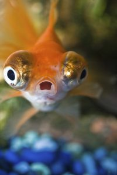
Photo Story: School Fair
Nina’s four, I’m seven. At the penny-toss Nina wins a goldfish with silvery fins—everyone cheers. I toss all my pennies, win nothing. When it’s time to leave I refuse. Everyone scolds—too old for tantrums. Dad buys a fish, so I’ll get in the goddamn car. I name her Goldie—unlike Nina’s, mine’s all gold. Name yours Silvia, I say.
Silvia’s fast—finishes everything before lumbering Goldie. Even my fish is a loser. One morning though, Silvia’s gone, nothing left but a silvery fin.
Goldie bumps her nose on the glass—I got you girl, she says.
Photo Story: Picturesque
“We have reservations at Gabriel’s tonight,” she said, toweling her hair. “James?” His laptop was open on the bed, but he must have left the room, probably to check with the concierge. She removed her black dress from the hanger and examined it, but her eyes wandered past the formal attire. Something in the picture on the wall had changed. A man in a suit now strolled along the sidewalk, smiling as if he hadn’t in so long. His expression was bright, like a man released from prison, and he waved to someone on the other side of the picture.
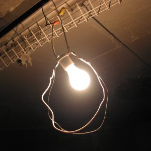
The Uncle
I used to love to linger and breathe in the scent of our cluttered garage, and of Dad’s old pickup always parked there. Traces of carbon monoxide mingled with the must of old things for an aroma so seductive it was the suicide of choice for folks hell-bent on finding an easy way out. The coroner said too much booze made Dad pass out before he cut the motor that night, but I never believed it. Later on, the smell I came to hate most was his cologne-drenched brother who often came to hang out and play pinochle with Mom.
Photo Story: The Little Ones
They burrow between the cracks in our reality, craving the taste of clouds, feeling only the coarse, rough dirt below. Peering eyes examine but do not see, too small to notice. Living beneath us, they hear our speech, see our actions, smell our food. Our footsteps rattle their homes and shake their souls, they tremble in fear.
Their brains are small, perception of time flows by. See our trees fall, our towers rise, our people perish in the blink of an eye. They shake their heads in shame.
“If only they were small like us, they would see it all.”
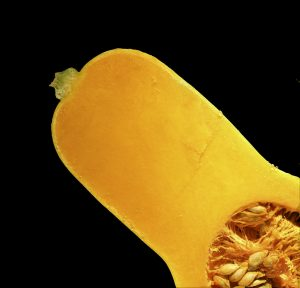
Building the Butternut
It didn’t seem right, but we set the clocks and got the children up at midnight to go out and yell at the squash. A time-tested deterrent, it didn’t harm the vegetables, but the negative voice lodged in the prickly vine, alarming the squirrels like the sentry crows, who swooped down in a rage to chase them away. When we ran out of children we tried pre-recorded messages, but the squirrels severed the connection and dragged off the squash. Now, we summon our inner children, and the squash grows large. But we have to be quiet because of the neighbors.
“Exchange”
In 1969, I became an exchange student. I left home to spend the summer with my girlfriend’s family. They lived on a cliff, in a stucco house, overlooking Lake Ontario. The box radio sitting on top of the fridge played British Invasion, day in, day out. My girl used to test my language skills by pointing at the radio’s name-brand. Say this, she’d say, and I’d look at the script and spit out: Moe-Toe-Role-Ah. She’d laugh at my accent, which made me feel tiny, even though I’m terribly tall. I just needed more practice, that’s all—just like French kissing.
Temporary Kin
We soon realized we were both 15, but Freddy looked much older. He was taller, broader, even had the beginning of a mustache. My face hadn’t even thought of such a thing. We’d met in that alley behind the big bookstore.
It wasn’t long before we were sharing my sleeping bag. His was so thin it was worthless, and winter was coming. After the first night, though, we knew we’d always want to, to hold each other, and more, until we fell asleep.
When they picked us up, we said we were brothers and begged them not to separate us.
Photo Story: A&V
We had a little photo store in Old Tappan. Our father named it Gold Star Photos. My brother and I spent summers in the back, where the studio was, not doing summer homework. ‘Click-flash’ went our Kodak disposables. Oh-so-temptingly near, the rolled-up backdrop for passport photos hung suspended from the ceiling like enormous toilet paper. Once, we took the end and pulled. The unrolling was glorious. Giant’s bumwad. Ha-ha-ha! A riot. You should have seen how we cried when scolded.
Still, shame didn’t stop us from peeking into the darkroom later, before the door slammed in our faces. Too late.
Things You Can Take
A name. A message. Nobody’s shit. A hike. A hit. A beating.
Notes. A page from their book. Criticism.
A walk on the wild side. Ice with your drink. Salt with your margarita. A sip. Directions. Risks. A joy ride. The red pill. The car into the shop.
What you can get. The money and run. The long way home. The trash out.
A seat. Time off. An oath. Turns. The rap for it. It all in.
A break. Everything for granted. A moment to think about it. A different route. It all back. A life. Your life. A joke.
Hunger Pangs
We are sitting in the kitchen when I ask her if she still loves me.
As she answers, she begins to remove all of the things I don’t like from a paper container of fried rice—the peas, the carrots, the chicken—until there is nothing left but browned rice and slimy onions.
I feel her doing the same thing with her words—spoon feeding me answers of little substance because she thinks I like the taste of them, how easily they slip down to my stomach.
She’s right. I eat it all.
I’m still hungry late into the night.

 I intentionally told this tale blandly, but you get the idea: there is a very good story here. Fleshed out in more detail, the story could give you the sense that you understand what made Google succeed; it would also make you feel that you have learned a valuable general lesson about what makes businesses succeed. Unfortunately, there is good reason to believe that your sense of understanding and learning from the Google story is largely illusory. The ultimate test of an explanation is whether it would have made the event predictable in advance. No story of Google’s unlikely success will meet that test, because no story can include the myriad of events that would have caused a different outcome. The human mind does not deal well with nonevents. The fact that many of the important events that did occur involve choices further tempts you to exaggerate the role of skill and underestimate the part that luck played in the outcome. Because every critical decision turned out well, the record suggests almost flawless prescience—but bad luck could have disrupted any one of the successful steps. The halo effect adds the final touches, lending an aura of invincibility to exaggerate the role of skill and underestimate the part that luck played in the outcome. Because every critical decision turned out well, the record suggests almost flawless prescience—but bad luck could have disrupted any one of the successful steps. The halo effect adds the final touches, lending an aura of invincibility to the heroes of the story.
I intentionally told this tale blandly, but you get the idea: there is a very good story here. Fleshed out in more detail, the story could give you the sense that you understand what made Google succeed; it would also make you feel that you have learned a valuable general lesson about what makes businesses succeed. Unfortunately, there is good reason to believe that your sense of understanding and learning from the Google story is largely illusory. The ultimate test of an explanation is whether it would have made the event predictable in advance. No story of Google’s unlikely success will meet that test, because no story can include the myriad of events that would have caused a different outcome. The human mind does not deal well with nonevents. The fact that many of the important events that did occur involve choices further tempts you to exaggerate the role of skill and underestimate the part that luck played in the outcome. Because every critical decision turned out well, the record suggests almost flawless prescience—but bad luck could have disrupted any one of the successful steps. The halo effect adds the final touches, lending an aura of invincibility to exaggerate the role of skill and underestimate the part that luck played in the outcome. Because every critical decision turned out well, the record suggests almost flawless prescience—but bad luck could have disrupted any one of the successful steps. The halo effect adds the final touches, lending an aura of invincibility to the heroes of the story.
 Next, consider an easy question: Assuming that the two patients used the scale of pain similarly, which patient suffered more? No contest. There is general agreement that patient B had the worse time. Patient B spent at least as much time as patient A at any level of pain, and the “area under the curve” is clearly larger for B than for A. The key factor, of course, is that B’s procedure lasted much longer. I will call the measures based on reports of momentary pain hedonimeter totals.
Next, consider an easy question: Assuming that the two patients used the scale of pain similarly, which patient suffered more? No contest. There is general agreement that patient B had the worse time. Patient B spent at least as much time as patient A at any level of pain, and the “area under the curve” is clearly larger for B than for A. The key factor, of course, is that B’s procedure lasted much longer. I will call the measures based on reports of momentary pain hedonimeter totals.